第7回秋川流域花火大会の開催にあたり、各企業・団体の皆さまより多大なるご支援を賜りましたこと、心より御礼申し上げます。
皆さまからの温かいご協賛とご協力により、本大会を開催できる運びとなりました。
引き続きご支援、ご協力を賜りますようお願い申し上げます。
特別協力
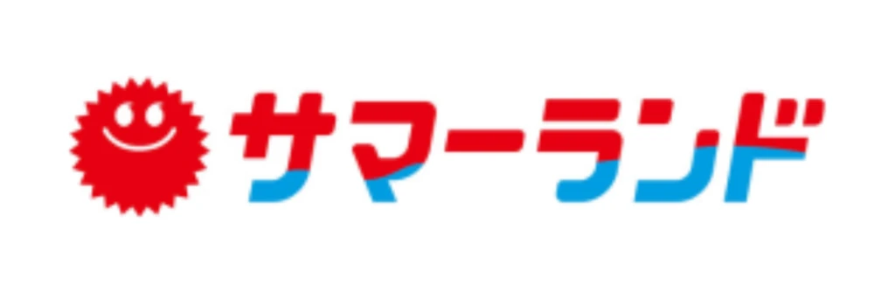
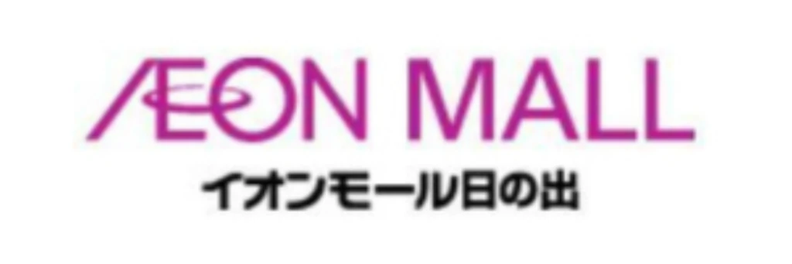
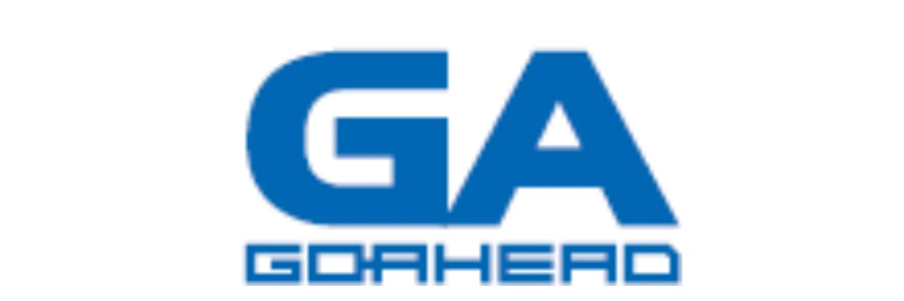
ゴールドスポンサー
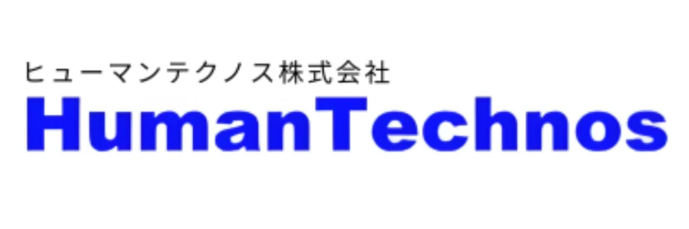
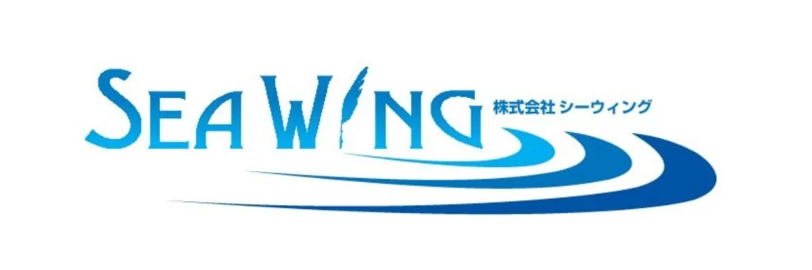
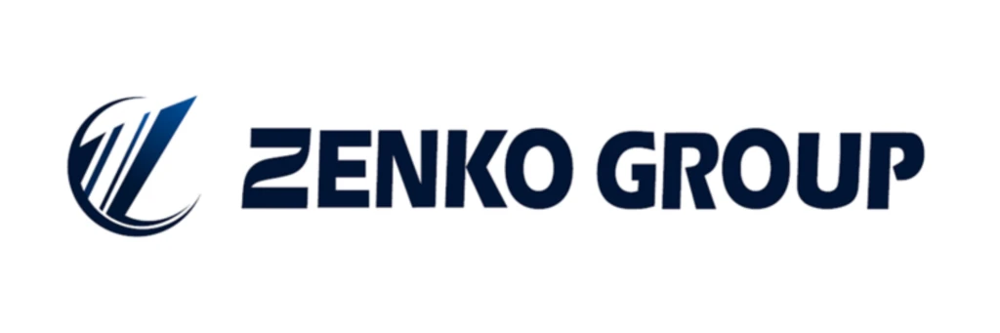
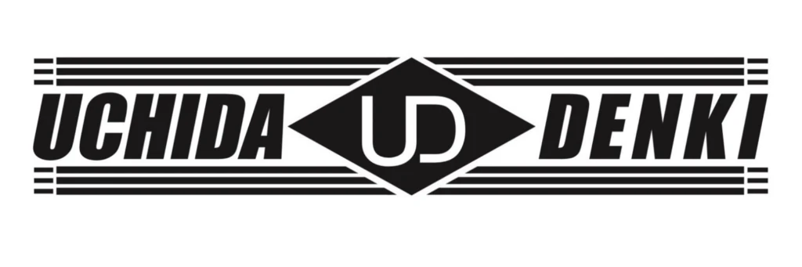
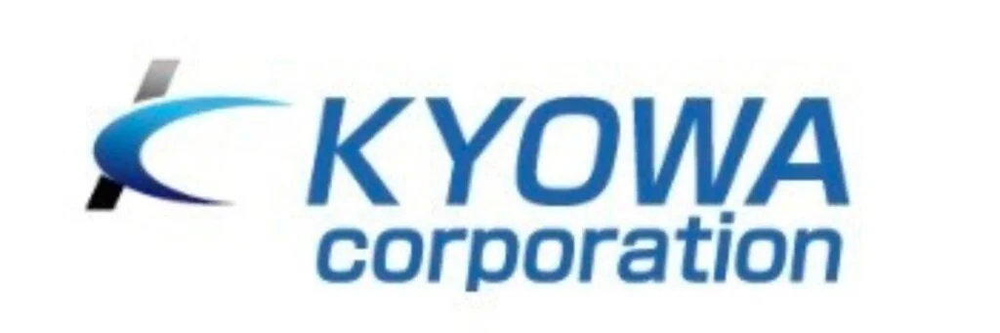
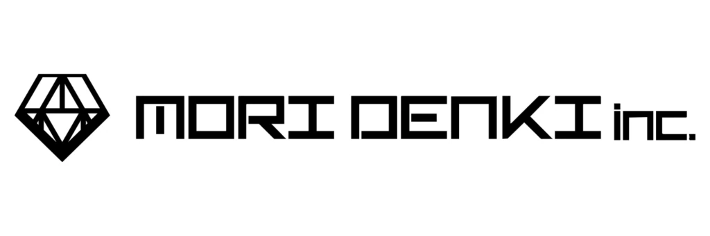
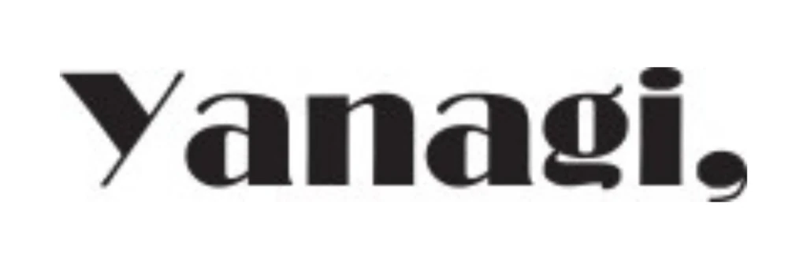
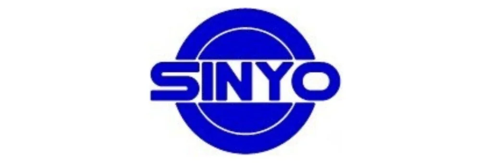
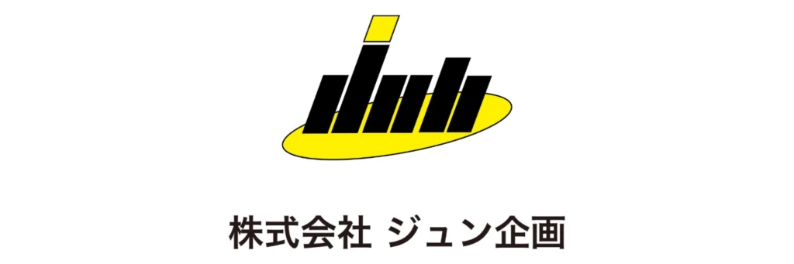
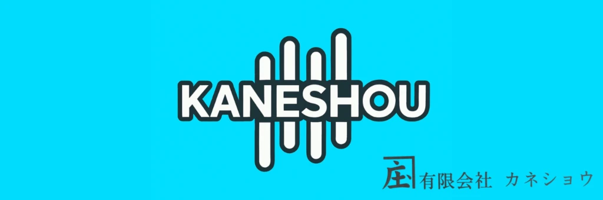
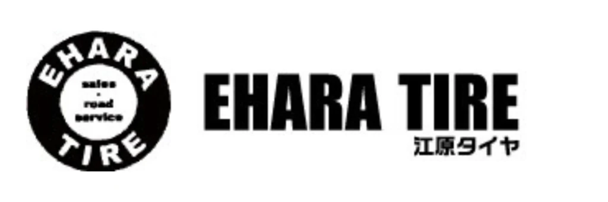
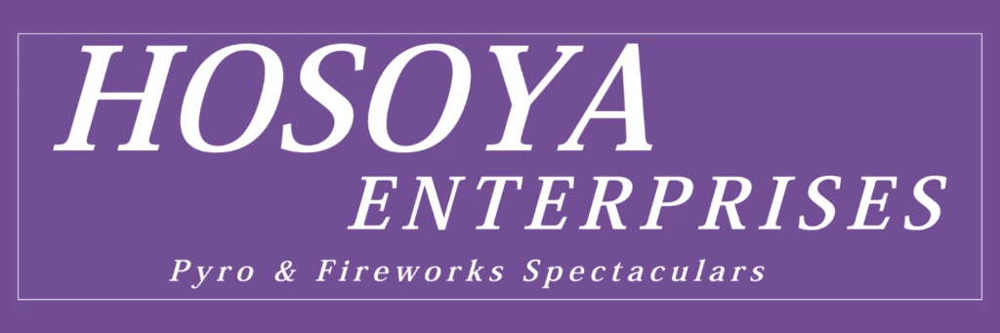
ご協賛企業
| 有限会社橋本商事 | 株式会社一新技建 |
| 株式会社KTプロジェクト | 株式会社翆蓬 |
| 税理士岡野哲史事務所 | 株式会社ADVANCE |
| みどり調剤薬局有限会社 | 有限会社大川製作所 |
| 株式会社吉増製作所 | 株式会社TYDI |
| 有限会社鈴木電機 | 有限会社おつど塗装 | 株式会社一梧WORKS |
| 株式会社NEXTSTAGE | 株式会社K.E.N | 株式会社住宅工営 |
| フォレストデンタル クリニック森田歯科医院 | H&N物流株式会社 株式会社クレムリ | 社会福祉法人サンライズ ひのでホーム |
| 株式会社和 | Pubsnack慶 | 医療法人社団豊信会 |
| パブヴィーナス | ー | ー |
| 有限会社谷治新太郎商店 | 有限会社大野ハウジング | 有限会社大石内装 |
| 有限会社小峰電気 | 有限会社サニーシステム | 有限会社エムフード |
| 有限会社あきる野測量設計 | 有限会社SmileMaker | 有限会社COMMON |
| 麻沼歯科医院 | 秋川スナックカルネ | 株式会社万電 |
| 株式会社服部仮設工業 | 株式会社道光建設 | 株式会社東郊建設 |
| 株式会社達磨 | 株式会社昭立造園 | 株式会社桜華 |
| 株式会社五日市建装 | 株式会社リプロス | 株式会社フラット |
| 株式会社シマデン工業 | 株式会社コスモホーム | 株式会社ケイプラス・ジャパン |
| 株式会社グリーンライフ | 株式会社オートリバティ | 株式会社エルティ流通センター |
| 株式会社エスユーサービス | 株式会社ヴィクサス | 株式会社アップス |
| 株式会社アースリー | 株式会社アーイング | 株式会社OGK |
| 株式会社K-プランニング | 株式会社GINZA | 株式会社D-LINE |
| ほうりんじ幼稚園 | パーク商事株式会社 | スリジエ整骨院 |
| シーキューブ株式会社 | コトリ司法書士事務所 | GIRLS BAR JASMINE |
| 玉光株式会社 | ー | ー |
| 有限会社武田企画 | 東京秋川ライオンズクラブ | 合同会社YuRaLi・28 |
| naturalSQUAD株式会社 | 株式会社ダイナエステート | 秋川高等学院 |
| 柳川測量建築事務所 | BARCLIMB秋川店 | 有限会社ニーズ |
| 日本たばこ産業株式会社東京支社 八王子サテライトオフィス | 明治安田生命保険相互会社 立川支社五日市営業所 | 大内塗装店 |
| 株式会社鈴木屋 | 株式会社スイーピングサービス | 立川国際カントリークラブ |
| 有限会社KAI-CORPORATION | 馬い鶏＋沖縄料理 | 三信自動車 |
| 株式会社ケアセレステ | LILIO | 多摩信用金庫秋川支店 |
| 多摩信用金庫あきる野支店 | 立山産業株式会社あきる野支店 | 立山産業株式会社 |
| 南部商事株式会社 | 東亜道路工業株式会社多摩営業所 | 株式会社佐藤電業 |
| スガオ精密有限会社 | LoungeBloom | 美浜電機株式会社 |
| 昭和化学工業株式会社 | 株式会社和起製作所 | 株式会社松田計装工業 |
| 鮨武 | 台湾薬膳料理 楊の泉 | 有限会社鳳工芸 |
| 有限会社アキオートサービス | 特別養護老人ホームあたご苑 | 第一生命秋川支店 |
| 大多摩開発株式会社 | 創作和食料理店明かり | 成己オート |
| 社会福祉法人緑愛会あたご苑 | 合資会社岸石材店 | 後藤酒店 |
| 近藤醸造株式会社 | 株式会社草花不動産 | 株式会社松田計装工業 |
| 株式会社高木造園 | 株式会社アールシーコア | クリーンメタル株式会社 |
| オハナ社労士事務所 | あたご苑ケアハウス | Daidokoro-BARあおや |
| 株式会社エス企画 | 医療法人互生会ファミリート日の出 | 小牧幸司 |
施設寄付プランのご協賛者
この度は「施設寄付プラン」へのお申込み・ご支援を賜り、誠にありがとうございました。
皆さまからの温かいご寄付により、障がいのある方々に、夜空に広がる花火を楽しんでいただく運びとなりました。
皆さまのご支援が、一人ひとりのかけがえのない時間と特別な体験につながります。心より感謝申し上げます。
| 株式会社五光建設 | 株式会社山下葬儀社 |
| 株式会社スリーエム | 株式会社エスユーサービス | 株式会社イーグル商会 |
| 有限会社松村ダスト | 有限会社三幸 | 有限会社ナカムラ設備工業 |
| 税理士法人プログレ | 古民家スタジオ まきのした住宅 | 株式会社エムエスジー |
| ヤマデン株式会社 | スナックシャンシャン | おおだけ法律事務所 |
| エアポート | あきる野市倫理法人会 | ー |
| 有限会社島田屋 | 太公望 | 瀬戸岡医院 |
| 焼肉万蔵 | 株式会社原美装 | 有限会社小野木工製作所 |
| 有限会社吉沢自動車 | 有限会社丸源 | 日本ウィード株式会社 |
| 特別養護老人ホームこもれびの郷 | 築地本願寺西多摩霊園 | 青梅信用金庫秋川支店 |
| 西武信用金庫日の出支店 | 西武信用金庫秋川支店 | 西武信用金庫五日市支店 |
| 清水燃料株式会社 | 新興産業株式会社 | 社会福祉法人福信会 |
| 社会福祉法人さくらぎ会 さくらぎ保育園 | 株式会社アイコンサルティングオフィス | 江戸一 |
| 五日市に馬車を走らせる会 | 近藤医院 | 幹寿司 |
| 株式会社明晴人材センター | 株式会社土田製作所 | 株式会社寿美屋 |
| 株式会社井上食品 | 株式会社タケダ | 株式会社セイフティー |
| 合資会社平野屋 | 宅飲みBAR柴田ん家 | 株式会社ＫＪ秋川総合研究所 |
| 株式会社Dステージ | 横川観光株式会社 | もうつぁると |
| テーラー内山 | いちょうホーム | あきる野Beauty歯科 |
| L’Arbre | ー | ー |